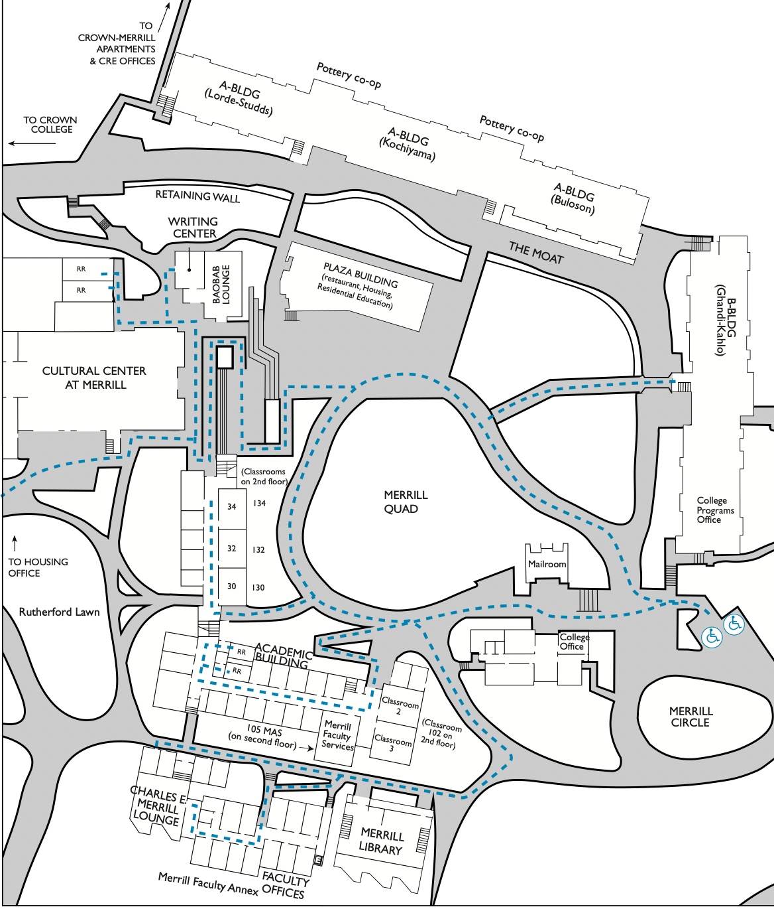

📊 Statistics
Overall 65.88/100 (527/800)
Dining 143/200
Library 122/200
Classes 127.5/200
Lounge 136/200

Student Testimonals
-
📌”I often try to go to the Stephenson dining hall instead, so yeah. And I like studying in my room personally. I have a nice view of the trees.”
-
📌”The dining hall sucks, not gonna lie. And the library makes for a nice hike.”
-
📌”I like studying and eating in my room. I have a nice view of the city.”
-
📌”The dining hall can be better, low key. And the library is sometimes a bit far, so it depends on where I am and how I’m feeling that day.”
-
📌”I like studying in the library. It’s nice and peaceful there and sometimes it can get loud near the study rooms and my apartment room.”
-
📌”Oh, I detest the food. It’s actually the dining hall that is gonna lead to live off campus next year. (laughs at own joke) No, but really, it sucks. The library food is decent, but can be better.”